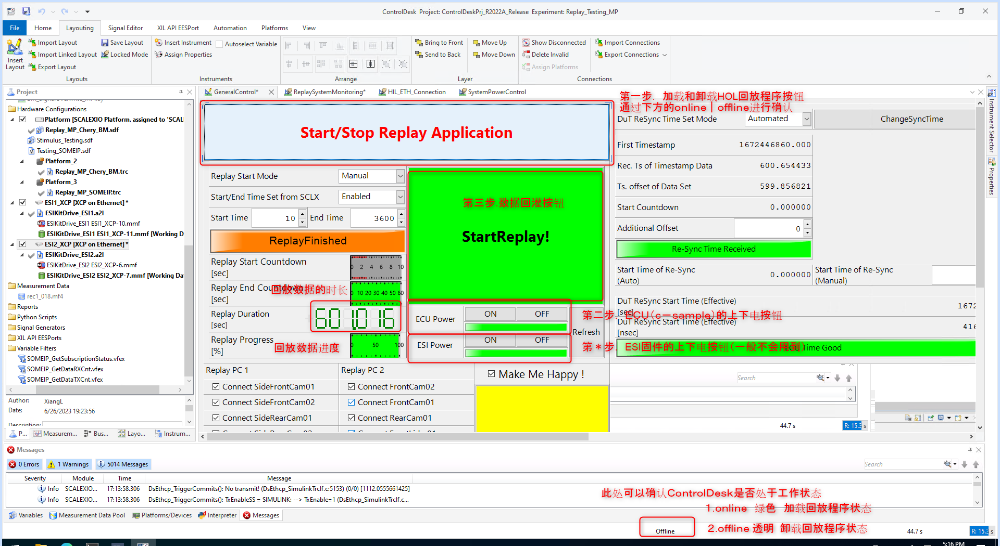

Hol use tutorial
The latest tutorial of using HOL through the Python command line/json configuration file is:: Automated Back Tutorial.pdf 27 Nov 2023 is updated by PMT (He Jianqiang). Here
The following content of the segmentation line is the method of using HOL by GUI before.
As of time: 16 nov 2023
1. The information on the current HOL cabinet is as follows
|
|
user name |
pwd |
IP |
Remark |
|
HPP1 |
dspace |
dspace |
192.168.140.101 |
These 3 computers use the local area network HPP3 (10.178.13.66) is connected to Bosch Network |
|
HPP2 |
dspace |
dspace |
192.168.140.102 |
|
|
HPP3 |
dspace |
dspace |
192.168.140.103 10.178.13.66 |
|
|
Sipper |
wpw1szh |
simulation02 |
10.178.13.88 |
Use Bosch Network, supporting the remote operation of personal work computers |
2. Hol test machine connection
To connect HOL's HPP3 computer remote desktop and SSH connecting jumpboard.
2.1 Remote desktop connecting HPP3 computer
The remote desktop connecting the HPP3 computer is to operate the two softwares of Controldesk and RTMAPS with graphical interface to operate the release data;
Controldesk software interface (Offline) as shown below:
RTMAPS software interface (Office) as shown below;
Except for changing test data, RTMAPS generally does not need to be operated.If the RTMAPS is abnormal, you should find He Jianqiang or Li Sugang to support the PER_HOL group in the PER_HOL group to support it.
2.2 SSH connection connecting springboard machine
The SSH connecting the springboard is to enter the C-SAMPLE execution of personal programs related code for SSH;
First of all
A. Personal computer connection Sipper Ssh wpw1szh@10.178.13.88 Simulation02
B, jumpboard connection B-SAMPLE, SSH root@10.43.0.28 root
(The default accounts, IP addresses, and passwords of Wave3's various SAMPLE are root, 10.43.0.28, root)
3. HOL operation process

3.1 Preparatory stage
Confirm whether Controldesk and RTMAPS are in the Offline state. If not, you need to manually restore it to the Offline state.
The current HOL software version, RTMAPS is jointly operated by ControldESK. Generally, there is no need to do the online and offLine state operations on RTMAPS alone.
3.2 Controldesk loading program to enter the online state
3.3 Click the ECU (C-SAMPLE) power-on button. The power-on is green, and the power-on is in the red state;
3.4 Enter B-SAMPLE to start your own program
After the ECU (C-SAMPLE) is called root@10.43.0.28 , Enter the QNX system environment of C-SAMPLE, execute your own related program commands;
Take the Perception warehouse as an example:
A. Unzip the DAILY-BUILD software package you get, such as Wave3-Asw-Develop_chery-202311030137CST-Chery_Camera_debug_safeTy.zip, unzip a folder named Output.
B. According to your own needs, you need to change the log level of viperparking_activity
(The current Daily-Build software package is closed by default log. Generally, you need to open your code program to debug your code program)
As shown in the figure below, modify the log level of Viperparking_Activity of Output/Boot_master_parking.sh
-A $ log_level -S $ log_sink is changed to 2 and 1 respectively
C. Copy (cover) to the viperparking_activity.bin to the file path path under the file path of the file path
D. Under the file path of Output, execute the starting script below
./start_master_parking.sh -v chery
As shown in the figure above, after the running sequence is started, it will enter the suspension time of about 10s. At this time, it is necessary to quickly implement (3.5 times of irrigation data).
3.5 Package Data
Refer to the third step of the operation drawing of the 3rd chapter, click the button [Startreplay!] In the future, there will be a countdown of 10s. After the countdown is over, enter the following interface
Main interface:
The Monitoring interface of the data is as follows, as follows,
The data recovery is normal. Basically, each Channel has buffered data beating forward with time; (some data packets lack some sensors, so there will be no data)
The data recovery is abnormal, and several Channel will not have any buffered data, which are 0.
When the data recovery is abnormal, it is generally two reasons: a. ESI abnormalities, b. RTMAPS abnormalities.(For details, see Chapter 6)
3.6 View whether the log output of Viperparking_Activity is normal
On C-SAMPLE, execute
tail -f /log/aos/master/ViperParking_activity.log
3.7 Recording bytesoup
On C-SAMPLE, refer to the following command
cd output/bin
export ENABLE_NP=ON
./mta_raw_output_gateway -e -w MTA.* \
.*viper_parking__xper_viper_nrcs_sem_seg_senderport.* \
.*viper_parking__xper_viper_parking_slot_senderport.* \
-r 2048
At this time, a time stamp is generated in the Output/Bin folder.
When the data recovery is over or it is considered that the recorded data time is sufficient, the Ctrl+C is turned off the program, and then copied the bytesoup file to its own service address, and then ROSBAG is transformed.
3.8 bytesoup into Rosbag
Bytesoup is converted into ROSBAG, you need to use the MTA environment and tools. You can refer CHEN Wenhui (XC-AS/PJ-WIN-PER5) Related documents,
ssh wpw1szh@10.178.13.88，simulation02
Enter/home/wpw1szh/cwh8szh/mta_20230920
Execute: ./toros.sh Parking_1103.bytesoup Parking_1103.bag The first parameter is the transmitted bytesoup file. The second parameter is the generated ROSBAG file
After the execution is completed, the ROSBAG file will be generated in the OUT folder of the current file path.
4. HOL end operation -return to the initial state
4.1 ECU to power;
4.2 Controldesk software uninstall the replay program;
(!!! Remember, every time the HOL operation process is over, you must restore the HOL status to the initial state, otherwise it will increase the probability of the next HOL abnormality !!!))
5. Choose the data to be played
5.1 RTMAPS has two pages: DSU1 and DSU0, the two data should be corresponding to one -to -one correspondence
DSU1 is a Master, a computer that corresponds to the HPP1 data of HOL; DSU0 is a computer that corresponds to HOL HPP2 data;


6. Data recovery abnormal check
When there is a problem with the HOL, you cannot recover on your own, you can seek support for PMT colleagues He Jianqiang and Li Sugang.
6.1 ESI abnormalities;
As shown in the figure below, it is the normal state of ESI. If the yellow exclamation mark appears, it means that it is not normal.